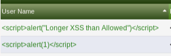
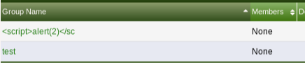
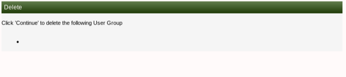
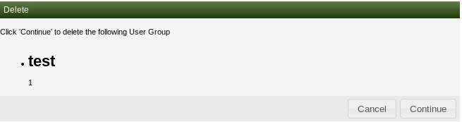
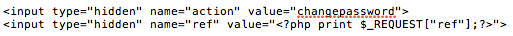

Uncovering Multiple XSS Conditions in Cacti<=1.1.38
September 02, 2018A few weeks ago I ran into an older version of the Cacti network graphing solution, which led me down the path of researching the application. This revealed some interesting vulnerabilities that I disclosed through the project's GitHub:
Authenticated Stored XSS in user_admin.php (v1.1.38)
When creating a new user on /cacti/user_admin.php, using the “copy” method, it is possible to bypass user input validation. The application allows for the creation of a user called "<script>alert(1)</script>". This username just meets the max characters allowed. However, this restriction can be circumvented to allow for longer usernames/XSS payloads by using a web application proxy and editing the request before it is sent to the server.  The stored XSS payload can then be executed by clicking in the user’s profile and visiting the “General”, “Permissions”, or “User Settings” tabs:http://127.0.0.1/cacti/user_admin.php?action=user_edit&id=[#}&tab=general
http://127.0.0.1/cacti/user_admin.php?action=user_edit&id=[#]&tab=realms
http://127.0.0.1/cacti/user_admin.php?action=user_edit&id=[#]&tab=settingsAuthenticated HTML Injection in user_group_admin.php (v1.1.38)
The same vulnerability, of using the “copy” approach to bypass input validation, exists on the user_group_admin.php page. However, I was unable to use the web application proxy trick to extend the field name.  When trying to go back and delete this, I ran into some issues that required me to manually go into the database and remove the group from the “user_auth_group” table.  As a PoC, I was able to use this for a short HTML injection by creating the group "<h1>test</h1>". However, the code only rendered when going back to delete the account: Pre-Auth Reflected XSS in auth_changepassword.php (v0.8.7g)
I started looking into Cacti after I ran into version 0.8.7g for a client. There were several reflected XSS vulnerabilities, but I came across this one in auth_changepassword.php that I did not see documented anywhere:http://127.0.0.1/cacti/auth_changepassword.php?ref=%22%3E%3Cscript%3Ealert(document.domain)%3C/script%3ELooking at the code itself, I saw a hidden parameter that does not validate user input allowing the XSS condition. This code was modified in the later version 0.8.7.h+. 
gps_not_fixed
gps_not_fixed
gps_not_fixed
Each of the issues identified have been addressed in the later versions of Cacti. However, the full disclosure of these vulnerabilities, and author's response, can be found under issue #1882.